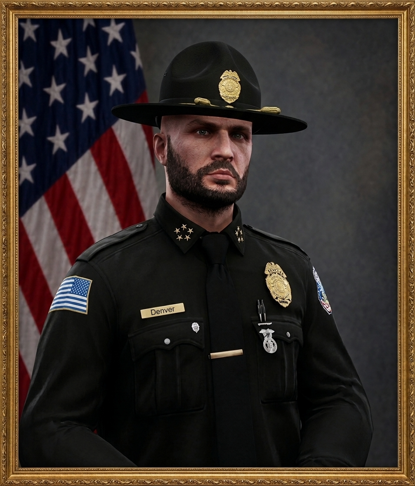
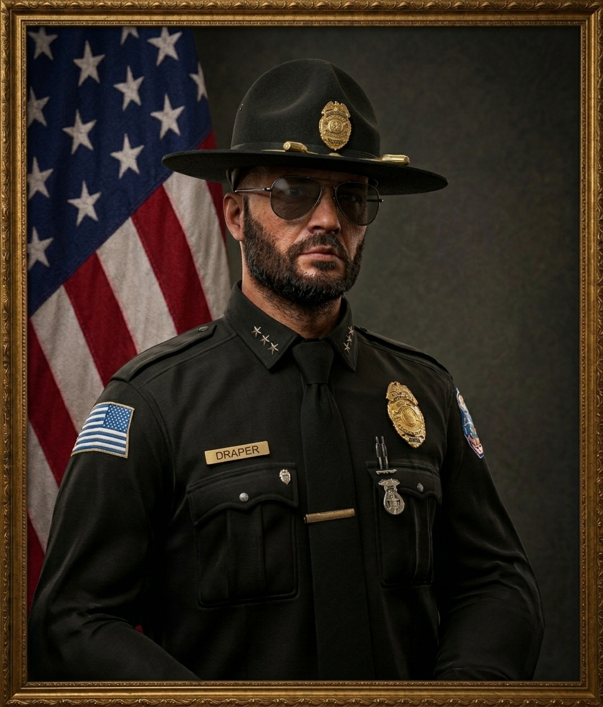

San Andreas State Police
Oběť — Čest — Služba | Oficiální Portál
Oběť — Čest — Služba | Oficiální Portál
Představitelé velení San Andreas State Police zodpovědní za chod celého sboru.

Nejvyšší velitel San Andreas State Police. Odpovídá za celkovou strategii, rozpočet, mezisložkovou spolupráci a směřování celého policejního sboru.
Zástupce velitele sboru. Dohlíží na operativní řízení jednotlivých divizí, vnitřní inspekci a zastupuje Commissioner v jeho nepřítomnosti.

Pomocný velitel sboru zodpovědný za administrativu, výcvikovou akademii, logistiku a personální záležitosti příslušníků SASP.